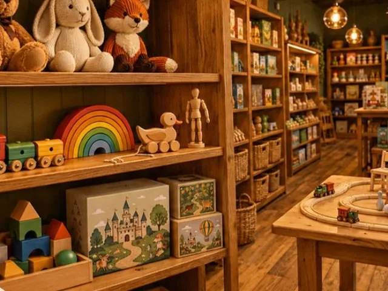

Speelgoedwinkels in Nijmegen: cadeautips per leeftijd
Bijgewerkt op 21 november 2026.
Sinterklaas en kerst komen eraan, en dan wil je een cadeau dat niet na een week in de kast verdwijnt. Daarom zetten we de speelgoedwinkels in Nijmegen op een rij per leeftijd: voor de allerkleinsten, voor kinderen op de basisschool en voor bouwers en fans van elke leeftijd.

Zo hebben we gekozen
We lazen in oktober 2026 de websites van de winkels in onze bedrijvengids die speelgoed verkopen, van hobbywinkels tot kinderwinkels. We kozen zaken waar je binnen kunt lopen en die een duidelijk eigen aanbod hebben, en deelden ze in naar de leeftijd waar ze het sterkst in zijn.
Goed om te weten: in de weken voor 5 december is het druk. Bij Intertoys en De Blokkenpiloot bestel je ook online en haal je het pakket op in de winkel.
Voor baby's en peuters
Toff & Teddies: kinderconceptstore in Lent
In winkelcentrum Hart van de Waalsprong staan moeder en dochter Natasja en Pleun sinds april 2025 samen in de winkel. Naast baby- en kinderkleding vind je er houten speelgoed, knuffels, puzzels, verkleedspullen en knutselspul.
Fijn voor een kraamcadeau of een klein extraatje bij een verjaardag. Open van woensdag tot en met zaterdag.
Goed voor: een kraamcadeau of een eerste knuffel.
Wonder: kinderwinkel in de Lange Hezelstraat
Wonder in de Lange Hezelstraat richt zich op kinderen tot en met twaalf jaar, met kleding van merken als Donsje, Mini Rodini en Bobo Choses. Tussen de kleding liggen speelgoed en knuffels voor als je iets leuks wilt meenemen.
Het team helpt je graag met een cadeau. Open van dinsdag tot en met zaterdag, en op de eerste en laatste zondag van de maand.
Goed voor: een cadeau dat net iets bijzonderder is.
Mees en Musje: duurzaam, en alleen online
Mees en Musje is een webwinkel vanuit Lent, zonder winkel waar je binnen kunt lopen. Je vindt er houten speelgoed van Grimm's en PlanToys, knuffels, puzzels en kinetisch zand.
Handig: je zoekt op leeftijd tot zes jaar of op cadeaubudget, en het pakket wordt thuisbezorgd.
Goed voor: wie liever thuis op de bank kiest.
Voor kinderen op de basisschool
Intertoys Dukenburg: de grote keus
In winkelcentrum Dukenburg heeft Intertoys speelgoed voor alle leeftijden, maar het sterkst is de winkel voor kinderen op de basisschool: LEGO-sets, bordspellen, ruilkaarten, knutselpakketten en games voor Switch, PlayStation en Xbox.
Puzzelaars kiezen uit Jan van Haasteren, Wasgij en Ravensburger. Bestel je iets in de webshop, dan haal je het gratis op in de winkel.
Goed voor: het verlanglijstje van Sinterklaas.
BoekenVoordeel: puzzels, spellen en knutselspul
Ook in Dukenburg zit BoekenVoordeel. Naast voordelige boeken en een flinke hoek prentenboeken vind je er legpuzzels, gezelschapsspellen en spullen om mee te knutselen, zoals diamond painting.
Er komen elke dag nieuwe artikelen binnen. Een goede plek voor een paar kleine cadeautjes voor in de schoen.
Goed voor: kleine cadeautjes voor in de schoen.
Studio Zoef: tweedehands en een speelhoek
Studio Zoef in de Van Welderenstraat verkoopt tweedehands kinderkleding van goede kwaliteit, en daarnaast cadeaus, speelgoed en accessoires. Kinderen kunnen spelen in de speelhoek terwijl jij rondkijkt.
Heb je zelf kleertjes over? Die kun je zonder afspraak komen brengen.
Goed voor: wie duurzaam en voordelig shopt.
Voor bouwers en fans van elke leeftijd
De Blokkenpiloot: alles met bouwstenen
De Blokkenpiloot in de Lange Hezelstraat draait helemaal om bouwstenen. Er is veel LEGO, van DUPLO en Technic tot Botanicals, maar ook merken als CADA, Pantasy en Lumibricks, vaak met verlichting of motoren.
Het team bestaat uit echte liefhebbers, onder wie volwassen fans die zelf bouwen, dus je krijgt goed advies. Open van dinsdag tot en met zondag.
Goed voor: een bouwproject voor jong en oud.
Gator: voor fans van games, anime en films
Gator verkoopt al sinds 2000 merchandise in de Lange Hezelstraat: Funko Pop!-poppetjes, actiefiguren, knuffels en posters van Star Wars, Harry Potter, Pokémon en Studio Ghibli.
Ook voor bordspellen, puzzels en ruilkaartspellen als Magic: the Gathering en Yu-Gi-Oh! kun je hier terecht.
Goed voor: tieners en volwassen fans.
Ook handig
- De Speelotheek in wijkcentrum Titus Brandsma aan de Tweede Oude Heselaan: hier leen je speelgoed voor kinderen tot ongeveer acht jaar, en je brengt het terug als de lol eraf is. Open op woensdag- en vrijdagochtend.
- Bruna in Lent: een jeugdafdeling met boeken, speelgoed, spelletjes en knutselspullen.
Alle winkels staan in de bedrijvengids onder hobbywinkels. Een boek als cadeau? Lees boekhandels in Nijmegen: voor elk soort lezer.
Meer in onze gids winkelen in Nijmegen.
Veelgestelde vragen
Waar koop je LEGO in Nijmegen?
Bij De Blokkenpiloot in de Lange Hezelstraat, een speciaalzaak voor bouwstenen, en bij Intertoys in winkelcentrum Dukenburg.
Welke speelgoedwinkel in Nijmegen is op zondag open?
De Blokkenpiloot is ook op zondag open. Wonder in de Lange Hezelstraat is open op de eerste en laatste zondag van de maand.
Waar vind je houten speelgoed in Nijmegen?
Bij Toff & Teddies in Lent, en online bij Mees en Musje.
Kun je in Nijmegen speelgoed lenen?
Ja, bij de Speelotheek in wijkcentrum Titus Brandsma, voor kinderen tot ongeveer acht jaar.